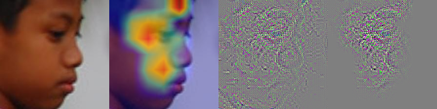
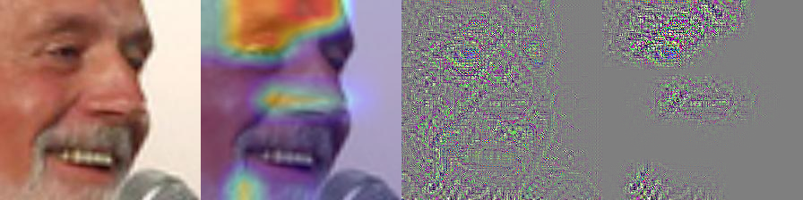
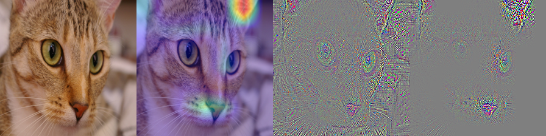
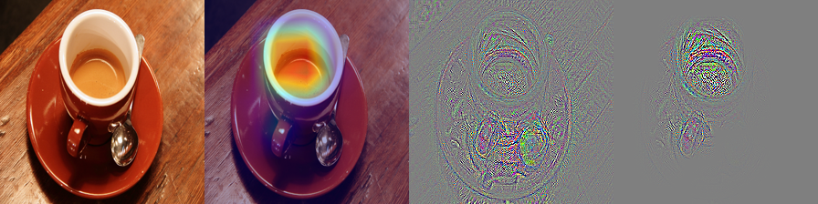
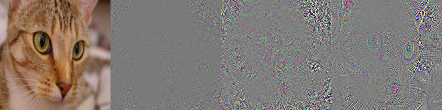

Grad-CAM と Guided Backpropagation
特徴マップで, 学習した CNN の内部を可視化できました. しかし, 特徴マップを人が見て, CNN の判断の基準を説明するのは困難です. そこで, CNN の判断を人が説明できるように, 特徴マップの情報を元の画像の上に重ねて示す技法がいくつかあります.
Grad-CAM (Gradient-weighted Class Activation Mapping)Grad-CAM は, 予測するクラスについての勾配の情報を, CNN の中間層 (通常は最後の畳み込み層) の特徴マップに結び付けて, 画像のどの領域がクラスの識別に最も寄与しているかを可視化する手法です. 対象のクラスの得点の勾配を特徴マップまで逆伝播させてチャンネルごとの重みを求め, その重みで特徴マップを足し合わせて, 元の画像の上にクラスに特有の注目領域を示すヒートマップを作ります. ネットワークが判断の際に注目した画像の箇所が, 目で見て分かるようになります.
Guided BackpropagationGuided Backpropagation は, ネットワークの内部を逆向きに伝わる勾配を, 活性化関数 (ReLU など) を通るたびに, 入力が正の位置にある正の値だけを通すように制限して, 入力画像のどの画素が予測に大きく寄与しているかを可視化する手法です. 正の影響だけを残すので, 予測したクラスを支持する特徴に焦点を当てられます.
Guided Grad-CAMGrad-CAM と Guided Backpropagation を組み合わせた手法です. CNN が出力した予測に対して, どの画素がどの程度そのクラスの予測に貢献しているかを, より細かく可視化することを目指しています.
ここでは 10s と 60s に限定して, これらの手法を実行してみましょう. 次のコードも, 年齢識別のコード全体の main 関数から抜き出したものです (nonlocal を使っているので, 単独では動きません).
#------------------------------------------------------------------
# Grad-CAM, Guided Backprop, Guided Grad-CAM の実行 (10s, 60sに限定)
#------------------------------------------------------------------
import cv2
# 対象クラスIDとクラス名
target_cam_classes = {0:'10s', 5:'60s'}
# valデータからサンプル画像を取得
base_val_dir = os.path.join(data_dir, 'val')
sample_images = {}
for cls_id, cls_name in target_cam_classes.items():
cls_dir = os.path.join(base_val_dir, cls_name)
img_name = sorted(os.listdir(cls_dir))[0] # ファイル名の順で最初の画像
img_path = os.path.join(cls_dir, img_name)
sample_images[cls_id] = img_path
# Grad-CAM用フック設定
target_layer = model.features[-1]
features = None
gradients = None
def forward_hook(module, input, output):
nonlocal features
features = output
def backward_hook(module, grad_input, grad_output):
nonlocal gradients
gradients = grad_output[0]
forward_h = target_layer.register_forward_hook(forward_hook)
backward_h = target_layer.register_full_backward_hook(backward_hook)
# Guided Backprop用: ConvNeXtの活性化関数GELUの逆伝播を書き換える
# ReLUのGuided Backpropと同じ規則で, 入力が正の位置にある正の勾配だけを通す
gelu_inputs = {} # moduleをキーにしてforwardの入力を保存
def gelu_forward_hook(module, input, output):
gelu_inputs[module] = input[0]
def gelu_backward_hook(module, grad_input, grad_output):
# grad_output[0]: GELUの出力についての勾配 (上の層から届いた勾配)
# 返した値が, GELUの入力についての勾配として下の層へ伝わる
positive_input = (gelu_inputs[module] > 0).float() # 入力が正の位置だけ1
positive_grad = torch.clamp(grad_output[0], min=0) # 負の勾配を0にする
return (positive_grad * positive_input,)
# GELU層にフックを登録
guided_hooks = []
for m in model.modules():
if isinstance(m, nn.GELU):
fh = m.register_forward_hook(gelu_forward_hook)
bh = m.register_full_backward_hook(gelu_backward_hook)
guided_hooks.append(fh)
guided_hooks.append(bh)
def preprocess_image(img_path):
img = Image.open(img_path).convert('RGB')
img = img.resize((224, 224))
img_tensor = data_transforms['val'](img).unsqueeze(0).to(device)
return img, img_tensor
def generate_gradcam():
pooled_gradients = torch.mean(gradients, dim=[0,2,3])
cam = torch.zeros(features.shape[2:], dtype=features.dtype, device=features.device)
for i in range(features.shape[1]):
cam += pooled_gradients[i] * features[0,i,:,:]
cam = cam.cpu().data.numpy()
cam = np.maximum(cam, 0)
if np.max(cam) != 0:
cam = cam / np.max(cam)
return cam
def normalize_gradient(grad):
# 平均が0.5, 標準偏差が0.15になるように揃えて, 0〜1の範囲に収める
# (最小値と最大値で0〜1に揃えると, 少数の極端な値に合わせて全体がほぼ灰色になる)
grad = (grad - grad.mean()) / (grad.std() + 1e-8)
return np.clip(grad * 0.15 + 0.5, 0, 1)
def do_guided_backprop(model, img_tensor, target_class):
# 勾配リセット
model.zero_grad()
img_tensor.grad = None
# forward
output = model(img_tensor)
loss = output[0, target_class]
model.zero_grad()
loss.backward()
# 入力画像についての勾配 (正規化する前の値) を返す
guided_grad = img_tensor.grad.data[0].cpu().numpy().transpose(1,2,0)
return guided_grad
def apply_colormap_on_image(org_img, cam, alpha=0.5):
H_org, W_org, _ = org_img.shape
cam_resized = cv2.resize(cam, (W_org, H_org))
heatmap = cv2.applyColorMap(np.uint8(255*cam_resized), cv2.COLORMAP_JET)
heatmap = np.float32(heatmap)/255.0
org_img = np.float32(org_img)/255.0
cam_img = heatmap * alpha + org_img
cam_img = cam_img / np.max(cam_img)
return np.uint8(255*cam_img)
def guided_gradcam(guided_grad, cam):
# 正規化する前の勾配にGrad-CAMを掛けてから, 表示用に正規化する
H, W, _ = guided_grad.shape
cam_resized = cv2.resize(cam, (W, H))
guided_gradcam = guided_grad * cam_resized[..., np.newaxis]
return normalize_gradient(guided_gradcam)
gradcam_dir = 'data/result/gradcam_guided'
if not os.path.exists(gradcam_dir):
os.makedirs(gradcam_dir)
model.eval()
from PIL import Image
for cls_id, img_path in sample_images.items():
# original画像読み込み
org_img, img_tensor = preprocess_image(img_path)
org_img_np = np.array(org_img) # RGB, 224x224
img_tensor.requires_grad = True
# Grad-CAM
model.zero_grad()
output = model(img_tensor)
target_score = output[0, cls_id]
target_score.backward()
cam = generate_gradcam()
# Grad-CAM画像
org_img_cv = org_img_np[:,:,::-1].copy()
gradcam_img = apply_colormap_on_image(org_img_cv, cam)
gradcam_img_rgb = gradcam_img[:,:,::-1]
# Guided Backprop
gb = do_guided_backprop(model, img_tensor, cls_id) # 正規化前の勾配
g_gradcam = guided_gradcam(gb, cam) # 0-1 float
original_uint8 = org_img_np
gradcam_uint8 = gradcam_img_rgb
gb_uint8 = (normalize_gradient(gb)*255).astype(np.uint8)
g_gradcam_uint8 = (g_gradcam*255).astype(np.uint8)
combined = np.hstack([original_uint8, gradcam_uint8, gb_uint8, g_gradcam_uint8])
plt.imsave(os.path.join(gradcam_dir, f'class_{cls_id}_combined.png'), combined)
forward_h.remove()
backward_h.remove()
for h in guided_hooks:
h.remove()
print("Grad-CAM, Guided Backprop, Guided Grad-CAM 完了")10 代と 60 代のテストデータから, ファイル名の順で最初の画像を 1 枚ずつ選び, 年齢識別のモデルにこれらの手法を適用した結果が次のとおりです. 左から元の画像, Grad-CAM, Guided Backpropagation, Guided Grad-CAM の順に並べています. どちらの画像も, モデルは正しい年代を予測しています (6 つの年代のうち, 正しい年代の確率が最も高く, どちらも 0.48 です).


画像の出典: FairFace (Kärkkäinen & Joo, 2021), CC BY 4.0. 元の画像に Grad-CAM のヒートマップを重ねる, Guided Backpropagation の結果を掛け合わせるなどの加工をしています.
Grad-CAM を見ると, 学習したモデルは, 10 代の画像では目の周りと, 鼻の横から口にかけての頬に, 60 代の画像では額と鼻, 顎のひげに注目しています. 60 代の画像で注目している額は, しわの寄りやすい場所です. 人が年齢を推測するときにも額のしわやひげの白さを手がかりにすることがあるので, それなりに納得できる結果です. ただし, 1 枚ずつの画像から言えることは限られます. 実際の研究では, 多くの画像を比べて, モデルが何に注目しているかを分析します.
Guided Backpropagation の画像は, どちらも細かい粒状の模様が全体に広がり, 目や鼻の輪郭がかすかに分かる程度です. Guided Grad-CAM では, その模様のうち Grad-CAM が注目した領域にあるものだけが残ります.
Guided Backpropagation が何を映すかは, 輪郭のはっきりした物体の画像で確かめると分かりやすくなります. 次の図は, ImageNet で事前学習した ConvNeXt-Tiny (分類層を 6 クラス用に置き換える前のモデル) に猫とコーヒーカップの画像を入れ, モデルが予測したクラス (ImageNet のクラス番号 285 の Egyptian cat と 967 の espresso) について, 上のコードを実行した結果です. 左から元の画像, Grad-CAM, Guided Backpropagation, Guided Grad-CAM の順に並べています. 画像は scikit-image に付属するサンプル画像 (skimage.data.chelsea, skimage.data.coffee) です.


Guided Backpropagation の画像には, 猫の目, 鼻, ひげや, カップと受け皿の縁のように, 予測したクラスを支える輪郭が画素の単位で表れます. Guided Grad-CAM では, それらの輪郭のうち, Grad-CAM が注目した領域 (猫の鼻と目, カップの中) にあるものだけが残ります.
Guided Backpropagation の実装で次の 2 点を誤ると, 画像がほぼ一様な灰色になり, 画素ごとの寄与が読み取れなくなります (年齢識別のコード全体の以前の版にも, この 2 点の誤りがありました). 次の図は, 左から元の画像, 2 点とも誤った結果, 正規化だけを直した結果, 2 点とも直した結果です (いずれも事前学習済みのモデル).

- 負の勾配を 0 にしていない: 以前のコードは, GELU の出力が正の位置だけ勾配を通していましたが, 勾配そのものの符号は見ていませんでした. これは通常の逆伝播で ReLU を通るときと同じ計算なので, 得られる画像は通常の勾配に近いもの (相関係数は 0.7 程度) になり, 正と負の値が細かく入り混じります. Guided Backpropagation では, 入力が正の位置であることに加えて, 上の層から届いた勾配が負ならその勾配を 0 にします. 修正したコードでは,
torch.clamp(grad_output[0], min=0)で負の勾配を 0 にしています. - 最小値と最大値で正規化している: 入力画像についての勾配は, ごく少数の画素だけが極端に大きな値を取ります. 最小値と最大値で 0〜1 の範囲に揃えると, その少数の画素に合わせて目盛りが決まるので, 残りの画素はすべて中間の灰色に近い値になります. 修正したコードでは, 平均と標準偏差で揃えています (
normalize_gradient).Guided Grad-CAMも, 正規化した後の画像ではなく, 正規化する前の勾配にGrad-CAMを掛けてから正規化するように直しています.
ConvNeXt の活性化関数は ReLU ではなく GELU です. GELU は負の入力に対して 0 に近い小さな負の値を返すだけなので, ReLU の規則 (入力が正の位置にある正の勾配だけを通す) をそのまま当てはめています. GELU の本来の微分で逆伝播したうえで負の勾配を 0 にする方法でも, ほぼ同じ画像 (相関係数は 0.8 程度) になります. フックの登録には, 推奨されなくなった register_backward_hook ではなく register_full_backward_hook を使っています.